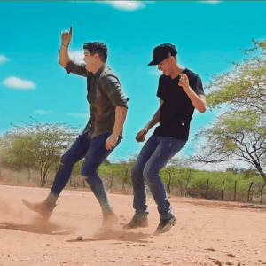

Fiz uma lista de todos os hobbies, a seguir:
O vôlei é um dos esportes mais populares do mundo. Ele é praticado em uma quadra retangular e com uma rede vertical que divide ao meio a área do jogo. O objetivo desse desporto é ganhar mais sets do que o time adversário. A disputa é composta por duas equipes e cada uma delas deve possuir 6 jogadores em campo.
A pisadinha ou piseiro, é um ritmo musical surgido no estado da Bahia. Xote, lambada, tecnomelody e forró eletrônico. bateria, sanfona, contrabaixo (4 ou 6 cordas), guitarra, teclado, percussão, sintetizador, caixa de ritmos e saxofone. O estilo musical surgiu na cidade de Monte Santo nos anos 2000.
Nome: Wesley henrique
E-mail:wesleyhenriquedasilva13@gmail.com
Localização: Bacabal-MA
Instagram: @Wesley512
WhatsApp: (99) 91401788 😎